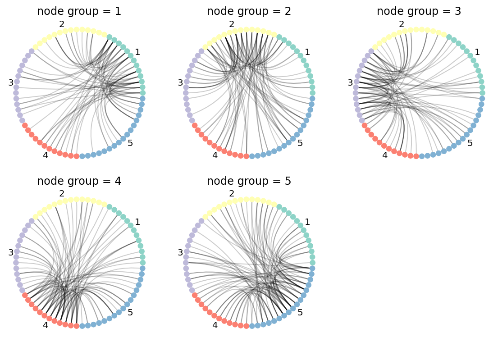

```python
from random import choice
import matplotlib.pyplot as plt
import networkx as nx
import numpy as np
import nxviz as nv
```
/home/runner/work/nxviz/nxviz/nxviz/__init__.py:18: UserWarning:
nxviz has a new API! Version 0.7.4 onwards, the old class-based API is being
deprecated in favour of a new API focused on advancing a grammar of network
graphics. If your plotting code depends on the old API, please consider
pinning nxviz at version 0.7.4, as the new API will break your old code.
To check out the new API, please head over to the docs at
https://ericmjl.github.io/nxviz/ to learn more. We hope you enjoy using it!
(This deprecation message will go away in version 1.0.)
warnings.warn(
Example graph
Here's an example graph. It has both quantiative and qualitative data encoded on the nodes and edges.
```python
categories = "abcdefghijk"
node_categories = "12345"
G = nx.erdos_renyi_graph(n=70, p=0.1)
for u, v in G.edges():
G.edges[u, v]["group"] = choice(categories)
G.edges[u, v]["edge_val"] = np.random.exponential()
for n in G.nodes():
G.nodes[n]["category"] = choice(node_categories)
G.nodes[n]["value"] = np.random.normal()
```
Non-panel'd version
Let's see what happens if we just try to plot all nodes and all edges together.
This isn't particularly useful.
The edges are over-populated on the visualization.
If there were structure in the graph that were interesting,
we'd find it hard to elucidate.
Here, we can rely on the principle of small multiples
to design a more effective visualizations.
nxviz faceting API
Graph visualization panels are the solution here.
We use categorical metadata on nodes or edges
to facet our visualizations.
(Faceting refers to creating subplots that contain a subset of the full dataset,
so that one can optimize for visual clarity.)
Because nodes are more easily arranged than edges,
we can facet our graph out by edge categories into panels.
As such, one subcategory of graph visualization panels
is defined by a faceting of our graph by edge categories.
Here are some examples.
```python
from nxviz import annotate, facet
# from nxviz import hive_panel, arc_panel, circos_panel
from nxviz.utils import edge_table, node_table
```
Hive panels are a special type of panel.
Because hive plots alone can plot either 2 or 3 categories of nodes,
it can't handle situations where there are more than 3 categories of nodes.
Here is where a panel of hive plots comes in:
each plot in the panel handles 3 of the categories that are present.
As such, you will have ${K}\choose{3}$ plots to plot.
For this reason, we don't recommend having more than 6 categories,
otherwise you'll end up with a lot of plots to look at.
While there are plot-specific faceting APIs,
you can use the building blocks in there to compose your own.
In this example,
we'll show you how to create a facet where we show
only edges that are associated with a particular group of nodes.
For this, the key function to use is node_group_edges,
which yields graphs that contains edges attached to a particular group,
as well as the group itself.
```python
import inspect
from nxviz.facet import n_rows_cols, node_group_edges
print(inspect.getsource(node_group_edges))
```
def node_group_edges(G: nx.Graph, group_by: Hashable):
"""Return a subgraph containing edges connected to a particular category of nodes."""
nt = utils.node_table(G)
groups = sorted(nt[group_by].unique())
for group in groups:
G_sub = G.copy()
G_sub.remove_edges_from(G_sub.edges())
wanted_nodes = (n for n in G.nodes() if G.nodes[n][group_by] == group)
for node in wanted_nodes:
for u, v, d in G.edges(node, data=True):
G_sub.add_edge(u, v, **d)
yield G_sub, group
```python
node_group_by = "category"
graphs, groups = zip(*node_group_edges(G, node_group_by))
nrows, ncols = n_rows_cols(groups)
fig, axes = plt.subplots(figsize=(8, 8), nrows=3, ncols=3)
axes = list(axes.flatten())
for ax, G_sub, group in zip(axes, graphs, groups):
plt.sca(ax)
nv.circos(
G_sub, group_by="category", sort_by="value", node_color_by="category"
)
annotate.circos_group(G_sub, group_by="category")
ax.set_title(f"node group = {group}")
i = axes.index(ax)
for ax in axes[i + 1 :]:
fig.delaxes(ax)
plt.tight_layout()
```

Development pattern
The core of faceting in nxviz is to return an iterator of graphs
that contain either
a subset of nodes,
a subset of edges,
or a subset of nodes and edges.
Using one of the faceting functions as an example to illustrate:
def edge_group(G: nx.Graph, group_by: Hashable):
"""Yield graphs containing only certain categories of edges."""
et = utils.edge_table(G)
groups = sorted(et[group_by].unique())
for group in groups:
G_sub = G.copy()
G_sub.remove_edges_from(G_sub.edges())
for u, v, d in G.edges(data=True):
if d[group_by] == group:
G_sub.add_edge(u, v, **d)
yield G_sub, group
The pattern is essentially to identify the exact groups that exist,
iterate over these groups,
and yield a graph that contains any one of the aforementioned three subsets
alongside the group.
That function pattern makes faceting consistent.